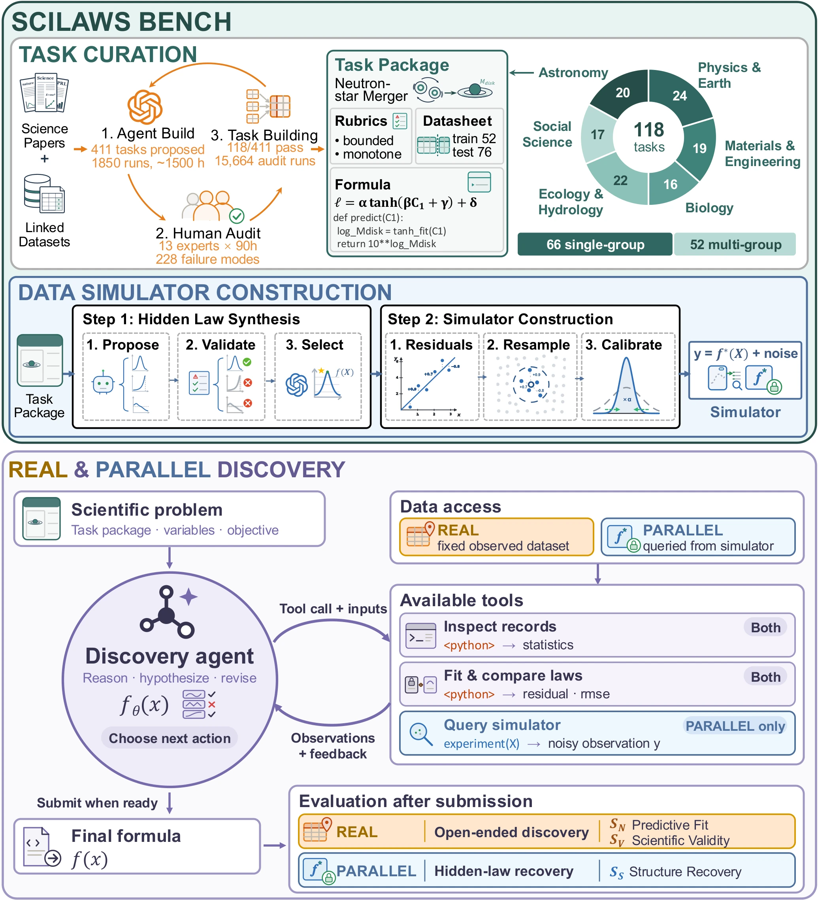
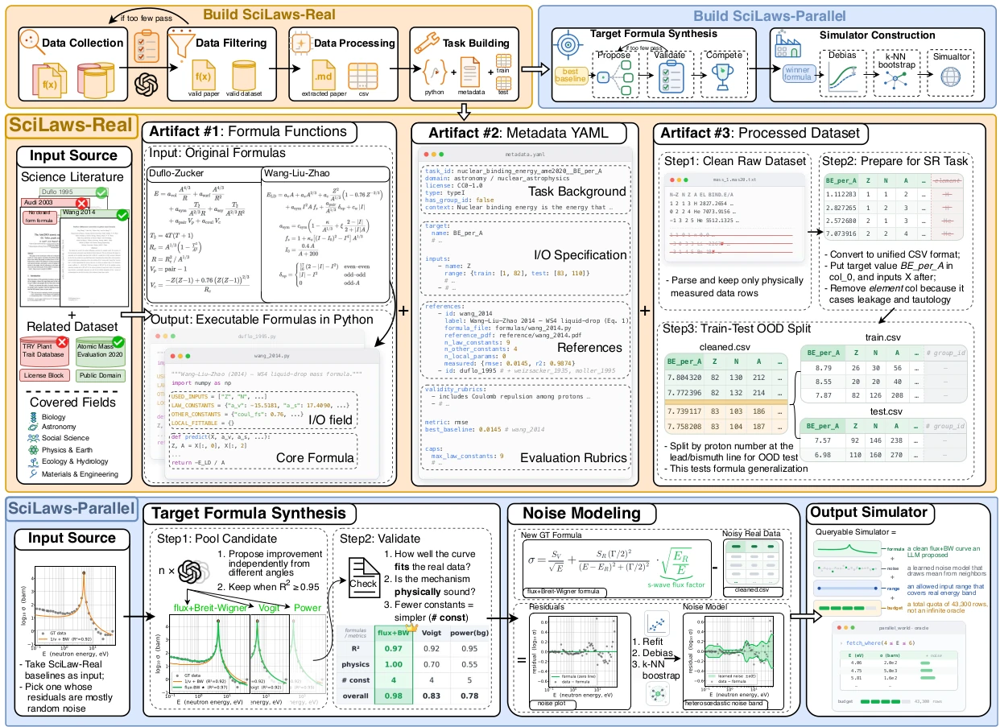
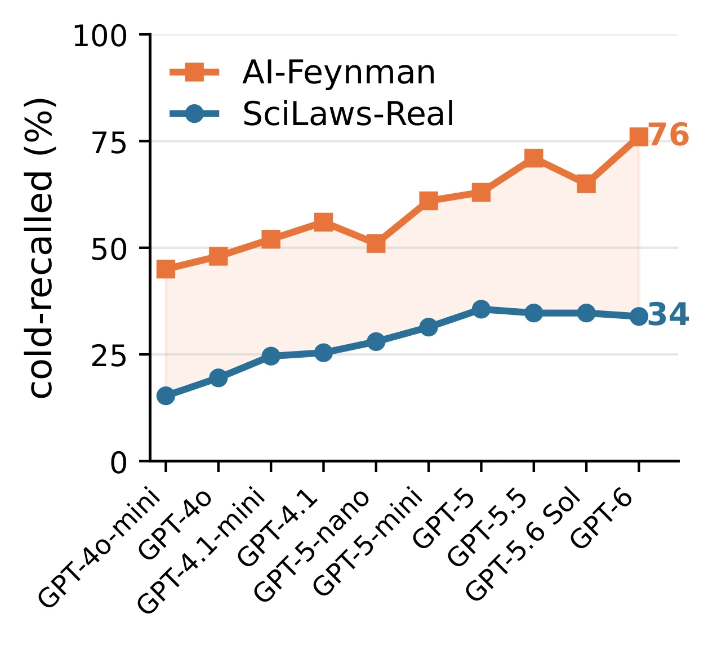
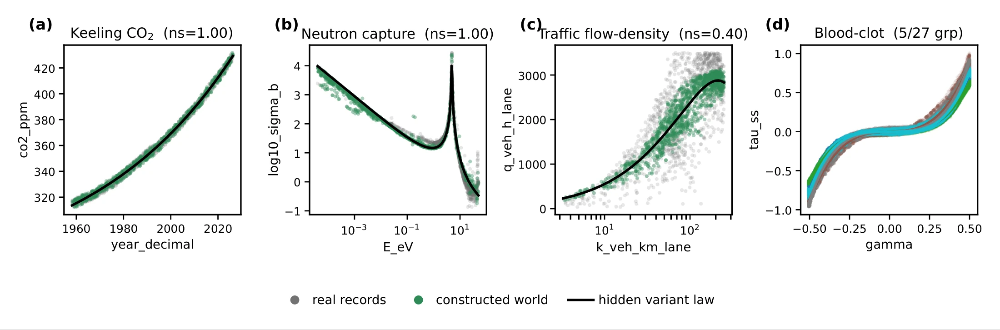
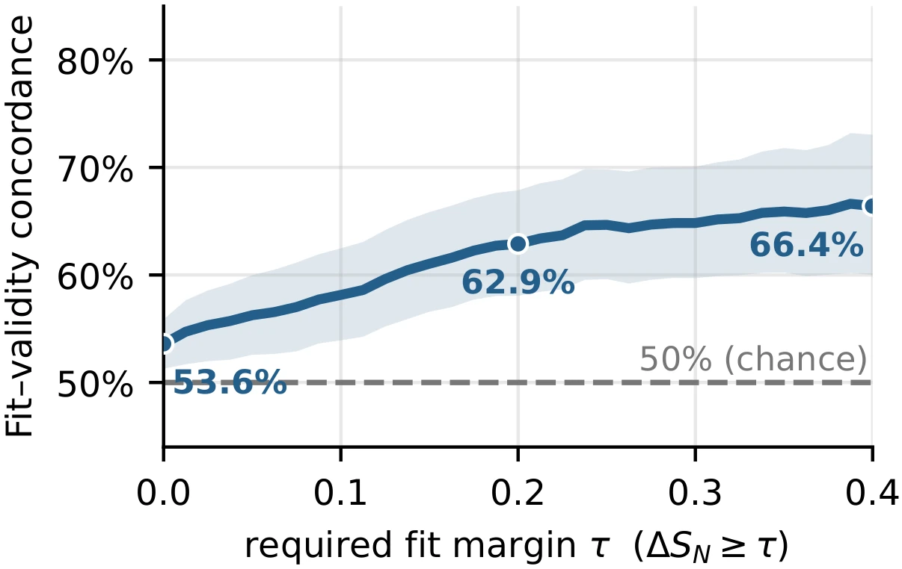
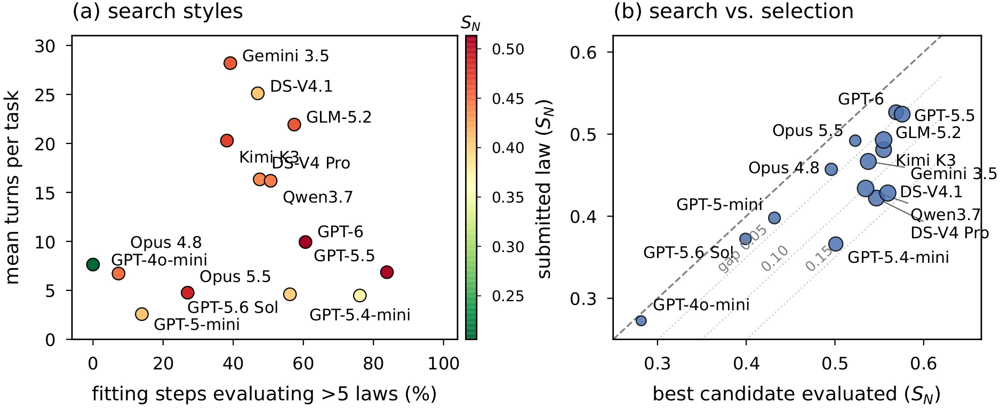
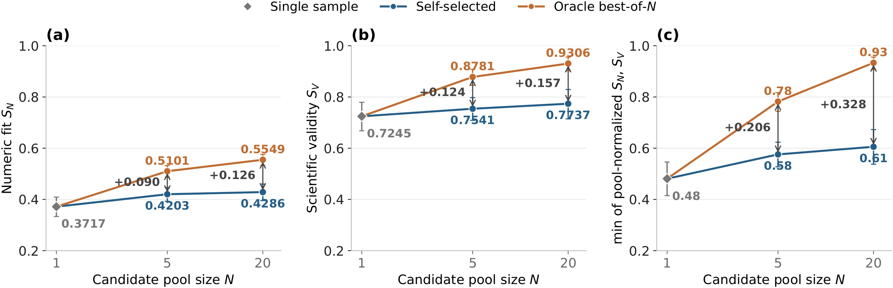

We took 118 open problems out of 381 scientific papers — the kind a research community is still arguing about — and asked frontier models to find the law twice: once from the measurements science already has, and once inside a world whose law has never been written down.

Abstract
Scientific law discovery has long been central to scientific progress, proceeding through iterative cycles of generating hypotheses, testing them against empirical evidence, and refining them under scientific constraints. As large language models (LLMs) become increasingly involved in scientific research, whether they can discover scientific laws and how to evaluate this ability remain open questions. A central evaluation challenge is to move beyond familiar published equations while keeping discovery tasks grounded in scientific data and constraints.
We introduce SciLaws-Bench, a curated collection of scientific task packages grounded in the source literature, each linking a scientific problem, supporting data, published reference equations, and scientific-validity rubrics. Through agent-assisted curation and human verification, we assemble 118 problems spanning six disciplines, drawing on 381 papers, 291 candidate laws, and roughly 8M data points. Each problem supports two complementary evaluation settings. SciLaws-Real uses fixed scientific data to evaluate proposed laws for held-out predictive fit and scientific validity. SciLaws-Parallel evaluates recovery of a newly synthesized structural variant of a published equation through active queries to a simulator calibrated to the source data.
Our evaluation reveals three limitations: good predictive fit need not imply scientific validity, recovering a published formula does not establish recovery of its new structural terms, and candidate selection remains a bottleneck in scientific law discovery.
The corpus
Mined from active, data-driven literature — not textbooks — with human verification of every eligibility decision that matters.
A problem is admitted only when three things hold at once: the paper states an established closed-form law with enough validity constraints to check it; the dataset is public and large enough to evaluate on; and, jointly, the target does not leak into the inputs while at least one published formula beats a naive baseline. That last clause is what keeps the benchmark honest — every task has a real law that really works, and a real gap left to close.
66 problems are single-group: one global law, one parameter set. 52 are multi-group: related groups share a functional form while a few parameter values differ, so a model must find a law that transfers rather than fit each group on its own. No prior benchmark covers that setting.
After filtering, papers are converted to Markdown and the relevant task fields are extracted, while the associated data tables are merged and standardized. Each package holds task metadata, executable reference formulas in Python, cleaned data splits, and a frozen, source-grounded validity rubric. Human reviewers check variable mappings, formula implementations, split rationales, and rubric items against the cited sources.

Less familiar than textbook laws
A cold-recall audit asks a model to write the reference formula from the variable specification alone, before it sees any data. Across ten OpenAI models, the mean cold-recall rate is 58.8% on AI-Feynman and 28.3% on SciLaws-Real. GPT-6 recalls 76.0% of AI-Feynman formulas and 33.9% of ours.

Two settings
Both inherit the same scientific context, admissible ranges, validity constraints, and group structure. What differs is where the evidence comes from — and whether a ground truth exists at all.
SciLaws-Real
fixed recordsThe measurements have already been collected. A model reads the scientific context and the training records and proposes a closed-form law. Published formulas act as reference baselines, not as recovery targets — a model is free, and rewarded, for going past them.
- S_N — numeric fitReference-relative on held-out data: the strongest published formula scores 0.5, a perfect predictor 1.0. Single-group splits test interpolation, input-range extrapolation, temporal transfer, or cross-condition generalization. Multi-group tasks hold out whole groups: the optical-dispersion task trains on 11 crystals and tests on CdSe, TiO2 and ZnWO4, calibrating each on short wavelengths and scoring the shared law on long ones.
- S_V — scientific validityA code-enabled judge executes each item of a frozen, source-grounded rubric, behind a global anti-hacking gate that rejects lookup tables and runaway free parameters.
S_V(t) = a_t · M_t / N_t
SciLaws-Parallel
active queriesThe same problem, rebuilt as a world you can run experiments in. It keeps the scientific context, input ranges, validity constraints and group structure, but its generating equation is a newly synthesized structural variant of a published formula. The model starts with no observations, chooses inputs (and groups) within a query budget, and infers the hidden law from the responses.
- Hidden-law synthesisSeveral agents independently propose structural variants of the selected published baseline. Candidates pass an execution and fit check, then scientific-validity and integrity screening; a final judge picks one winner on simplicity, physical plausibility and source consistency.
- S_S — structure recoveryFive levels: 0 unrelated · 0.25 right variables or trends · 0.5 the published base form · 0.75 base plus most added terms · 1.0 the complete hidden structure.
- Residual calibrationParameters are fitted to the source data (per group for multi-group tasks). Residuals in linear or log space are detrended and resampled by k-NN bootstrap, and their scale is calibrated against the hidden-law signal without imposing one noise distribution on every task.
y = f(X) + α · resample(X)

Results
Fourteen models from the GPT, Claude, Gemini, DeepSeek, Qwen, Kimi and GLM families, one fixed harness: a ReAct-style agent with a Python sandbox, up to 30 turns, and a task-specific query budget in the Parallel setting. Models with configurable reasoning effort run at medium. Only the base model varies.
GPT-6 leads all three metrics on aggregate. Against their predecessors GPT-5.5 and Claude Opus 4.8, GPT-6 and Claude Opus 5.5 gain 14.2 and 8.7 points of structure recovery, but only 1.1 and 0.5 points of scientific validity. Paired task-bootstrap tests support GPT-6's gain over GPT-5.5 in SS, not in fit or validity.
SV and SS are judged by GPT-5.4-mini (xhigh reasoning); memorization by GPT-4.1. On a stratified sample of 135 items per judge, against majority labels from five domain experts, Cohen's κ is 0.82 for validity, 0.84 for structure (quadratically weighted) and 0.77 for memorization, each inside the pairwise human–human range.
Findings
A better fit is not a better law
Within the same task, fit and validity agree in only 53.6% of 9,279 unequal-fit model pairs (validity ties count as half). Concordance reaches 66.4% only once the fit margin is ΔSN ≥ 0.4. Mean SN and SS correlate across models (r = 0.83), yet within GPT-6 their task-level correlation is r = 0.06. On the Keeling task GPT-5.5 beats the published reference on Real but recovers only the trend on Parallel; on Sellmeier it falls below the reference on Real and recovers the full hidden law on Parallel.
On a gold neutron-capture task, Qwen3.7-Max posts the best fit (SN = 0.73) with a law that adds a second resonance near 47 eV that the data do not contain. It meets 2 of 5 rubric items and fails the anti-hacking check, so SV = 0.

Memory hands back the published form, rarely the new terms
A cold-recall audit counts a formula as recalled when at least three of five generated implementations match the reference. It sorts the 118 tasks into Canon (11, recalled by all fourteen models), Mid (61) and Moat (46, recalled by none). Even Claude Opus 5.5, the strongest recaller, reproduces only 44.1% of the reference formulas.
On Real, beating the reference is more common where recall cannot help: averaged across models, the above-reference share rises from 12% on Canon to 36% on Moat, while the reference-level share falls from 49% to 16% (GPT-6: 36% → 59%). On Parallel, published-form recovery falls from 92% on Canon to 61% on Moat, but full-law recovery stays within 12–13% at every tier. It moves with the model instead, from 0% for GPT-4o-mini to 42% for GPT-6. On Beer–Lambert, all fourteen models recover the published form and none recovers the full hidden law.
Models find better laws than they submit
Models search differently. GPT-5.5 and GPT-6 often compare more than five candidates in one fitting step, while Gemini 3.5 Flash spends more turns; Claude Opus 5.5 compares more candidates than Opus 4.8 in fewer turns. Scoring every executable intermediate candidate on held-out data shows the cost of selection: the mean gap between the best candidate and the submitted law is 0.14 in SN for GPT-5.4-mini, against 0.03–0.04 for GPT-6 and Claude Opus 5.5.
Best-of-N sampling with GPT-5.4-mini on all 118 Real tasks shows the same gap across trajectories. From N = 5 to N = 20, the oracle gains 4.5 points of SN and 5.3 points of SV; self-selection gains under 2 points on either. In the five-candidate groups the selector sees, 60% of its winners are Pareto-dominated by another candidate.


Conclusion
Current LLMs show some ability to discover scientific laws, but they do not yet do so reliably. Predictive fit does not establish scientific validity; memory helps models recover published forms while full structural recovery stays hard; and agents evaluate better laws than they submit.
Scope. The benchmark covers closed-form law discovery with specified variables and scientific context, which is only part of the discovery process. Validity is judged against constraints drawn from the literature, which may not capture every relevant requirement. The task packages are built to support agents that design informative experiments, reason beyond memorized laws, and reliably pick scientifically valid hypotheses.
Examples
Eight tasks spanning all six disciplines and both settings, each with one real agent trajectory. The task cards are taken from each task's metadata.yaml; the traces are verbatim logs from the paper's original nine-model run — four reproduced in the appendix, four excerpted from the same archive — with every cut marked. Panel-wide counts in these cards refer to that nine-model run unless they name the fourteen-model panel.
Citation
@article{huang2026scilaws,
title = {Can LLMs Discover Scientific Laws in Real and Parallel Worlds?},
author = {Huang, Yiming and Liu, Ziche and Cui, Junxia and Wu, Zhuohang and
Wang, Yiqian and Zou, Xinkai and Mao, Lingjun and Huang, Nan and
Yu, Naicheng and Zhu, Kaijie and Ma, Yue and Zhou, Kun and
Peng, Letian and Shang, Jingbo},
journal = {arXiv preprint arXiv:2609.01552},
year = {2026}
}